Kürzlich verkauft
18 Objekte, verkauft über Byron. Sie lagen zwischen US$60.000 und US$1,3 M. Keines ist verfügbar: sie bleiben als Nachweis dafür, was sich in Mendoza bewegt und zu welchem Preis. Wenn eines dem entspricht, was Sie suchen, fragen Sie nach – vergleichbares Land kommt regelmäßig herein.
Objekte suchen
- Schnellfilter:
- Unter 200.000 US$
- Mit Erträgen
- Mit Wohnhaus
- Gute Wasserrechte
- Akzeptiert ₿
- Mit Video
- Über 400 ha
Alle 19 verkaufte Objekte werden angezeigt
Zu diesen Filtern passt kein Objekt. Erweitern Sie den Preis- oder Flächenbereich, oder setzen Sie die Filter zurück um alle 19 Objekte zu sehen.
Verkauft (18)
-
Verkauft
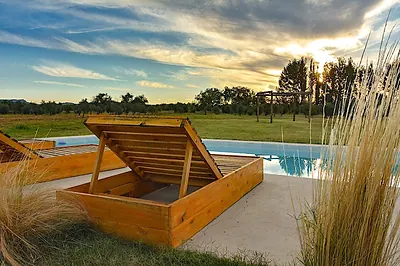
Cuadro Benegas, San Rafael, Mendoza
Luxus-Boutiquehotel, Olivenölbetrieb, Olivenhaine und Restaurant
US$1,3 M
-
Verkauft
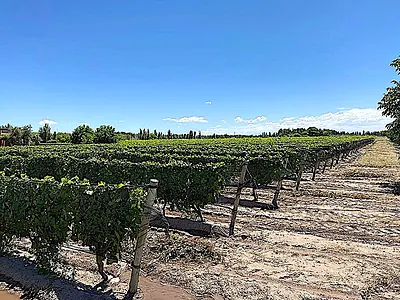
Las Paredes, San Rafael, Mendoza
Um US$1 Million reduziert! Luxuswohnhaus auf 86,7-ha-Anwesen (210 acres) mit Obstgarten und Weinberg
US$500.000 5.884 US$ pro Hektar
-
Verkauft
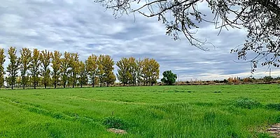
La Llave, San Rafael, Argentina
Rinder-Campo von 200 ha (500 acres) mit Eigentümerhaus und Luzernefeldern
US$400.000 1.977 US$ pro Hektar
-
Verkauft
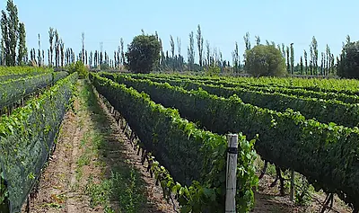
Calle Larga, San Rafael, Argentina
17 ha (42 acres) Malbec auf 20-ha-Finca (50 acres) mit Wohnhaus
US$285.000 16.769 US$ pro Hektar
-
Verkauft
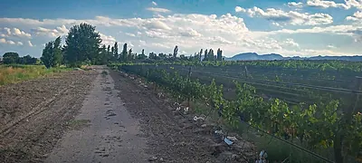
Cuadro Benegas, San Rafael, Argentina
Finca mit 17 ha (42 acres), Malbec-Weinberg und spektakulärer Aussicht
US$230.000 13.531 US$ pro Hektar
-
Verkauft
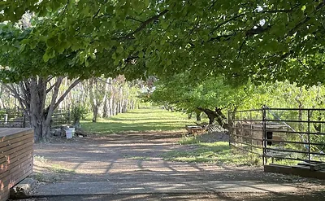
Los Claveles, San Rafael, Mendoza
Schönes Poolhaus mit bewaldetem Park auf 12 ha (30 acres)
US$185.000 15.239 US$ pro Hektar
-
Verkauft
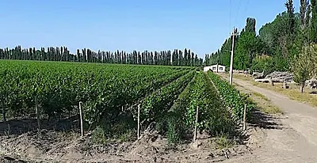
Algarrobal, San Rafael
Finca mit 30 ha (74 acres), davon 28 ha (70 acres) Weinberg, 2 Häuser usw.
US$180.000 6.010 US$ pro Hektar
-
Verkauft
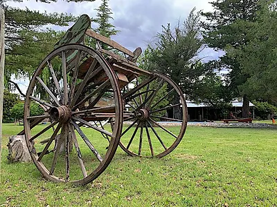
Cuadro Benegas, San Rafael, Argentina
Bodega mit Weinberg und/oder ertragsstarkes Bed & Breakfast: ab
US$175.000 Starke Cashflow-Gelegenheit!
-
Verkauft
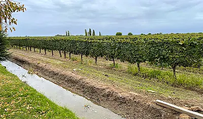
Calle Larga, San Rafael, Argentina
Cabernet-Sauvignon-Weinberg mit Poolhaus auf 19-ha-Finca (48 acres)
US$160.000 8.236 US$ pro Hektar
-
Verkauft
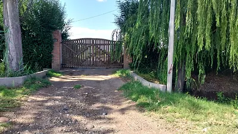
San Rafael, Mendoza
Finca mit 9,7 ha (24 acres), Pflaumen und Pfirsichen
US$130.000 13.386 US$ pro Hektar
-
Verkauft
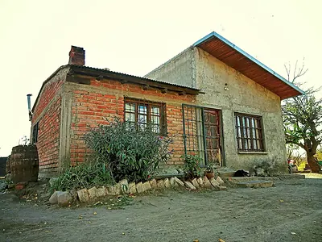
San Rafael, Mendoza, Argentina
Pflaumenanlage mit 10,5 ha (25 acres), Wohnhaus und Merlot-Trauben
US$120.000 11.861 US$ pro Hektar
-
Verkauft
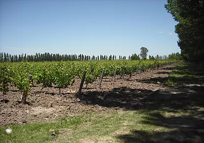
Colonia Gelman, San Rafael, Argentina
Gut gepflegter Weinberg mit starkem Ertrag und Pflaumen auf 26 ha (64 acres)
US$110.000 4.248 US$ pro Hektar
-
Verkauft
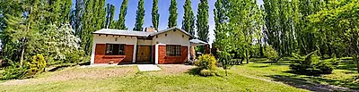
Rama Caida, San Rafael, Argentina
Reizendes ländliches Poolhaus auf einem hübschen, ruhigen und privaten Acre
US$90.000
-
Verkauft
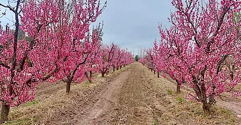
Cuadro Bombal, San Rafael, Argentina
Finca mit 14 ha (34 acres) – Obstanlage und Walnüsse: REDUZIERT
US$90.000 6.541 US$ pro Hektar
-
Verkauft
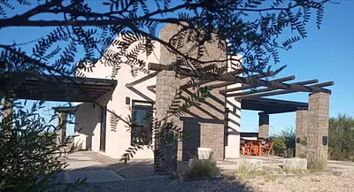
Cuadro Benegas, San Rafael, Mendoza
Hübsches Poolhaus mit 1 Schlafzimmer in einer Campo-Anlage
US$80.000
-
Verkauft
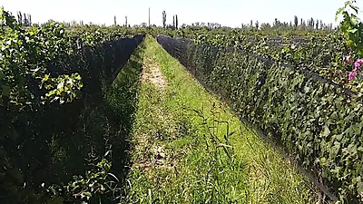
San Rafael, Argentina
Finca mit 10 ha (25 acres), Cabernet für Qualitätsweine und Tafeltrauben
US$68.000 6.721 US$ pro Hektar
-
Verkauft
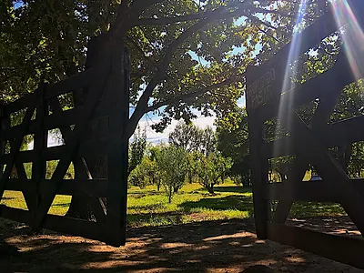
San Rafael, Argentina
Finca mit 6 ha (14 acres) und Ziegelhaus im Tourismusgebiet
US$60.000 10.591 US$ pro Hektar
-
Verkauft
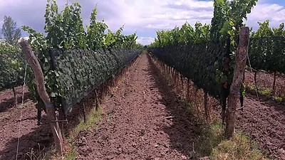
Las Paredes, San Rafael
Erstklassiger Weinberg – über 40 ha (100+ acres) mit 30 ha (75 acres) Premium-Weintrauben
Preis auf Anfrage Die Eigentümer haben US$1,5 Mill
Zurückgezogen (1)
Vom Markt genommen, nicht verkauft. Fragen Sie Byron, ob sie wieder verfügbar werden könnten.
-
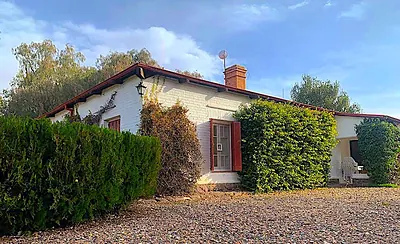
Rama Caida, San Rafael, Argentina
Gartengestaltetes Poolhaus im englischen Stil auf 5 ha (12 acres)
US$270.000 55.599 US$ pro Hektar